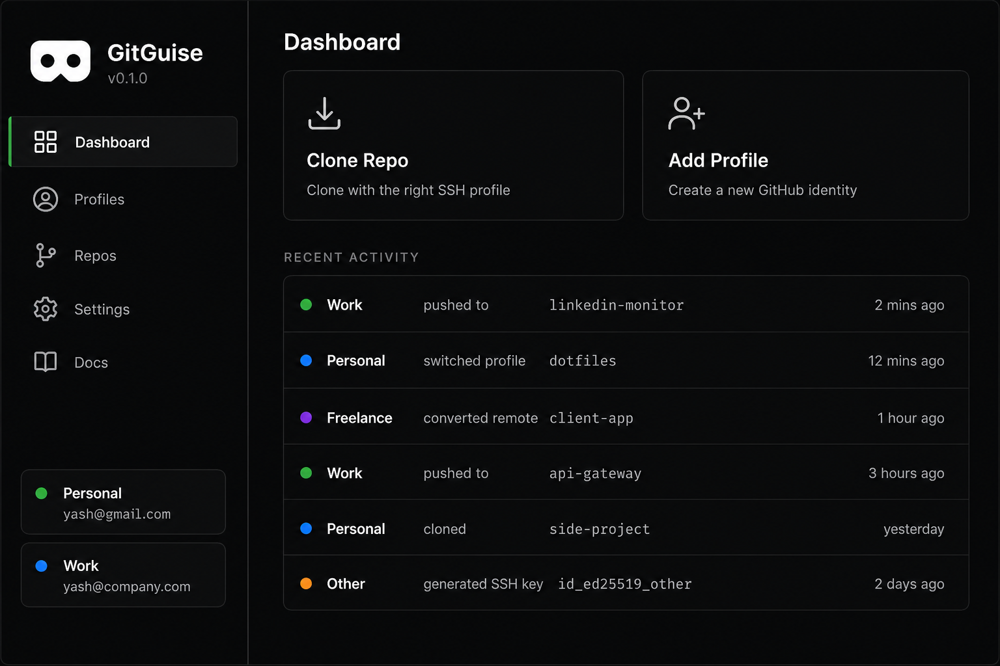

Your identities.
Perfectly separated.
GitGuise automatically routes every commit, push, and clone
to the right GitHub account — personal, work, or freelance.

Sound familiar?
“Committed as the wrong identity”
“SSH setup from scratch on every new machine”
“Manually switching emails before every project”
Everything handled automatically
Unlimited profiles
Add every identity you work under — no arbitrary limits
Setup wizard
SSH keys, config, and hooks — fully configured in minutes
Auto-detect on push
Reads your remote URL and pushes from the right account. Every time.
Init prompt
Every new repo gets assigned an identity before the first commit
Repo scanner
See every repo on your machine and exactly who it belongs to
New machine in 2 min
Export your entire setup. Import on a new machine. Done in 2 minutes.
How it works
Add your profiles
Name them, color-code them, connect them
Run the wizard
GitGuise configures SSH, hooks, and shell wrappers automatically
Push freely
The right identity is used automatically — you never think about it again